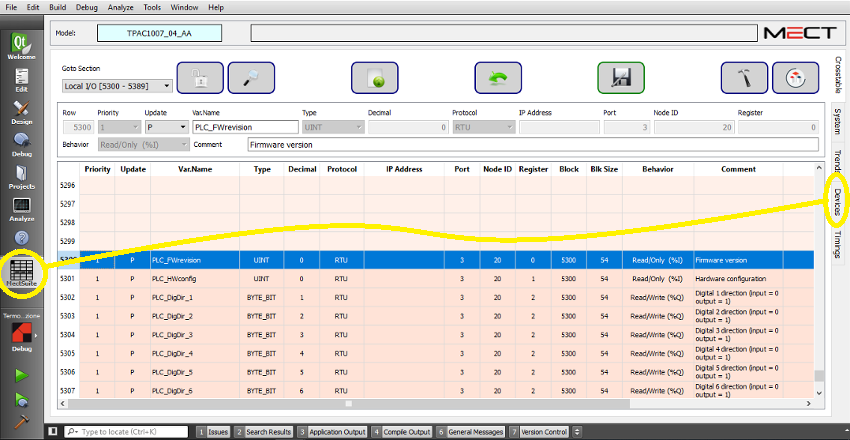

La ventana “Devices” proporciona una vista topológica de las variables utilizadas en la Crosstable del proyecto.

La interfaz es la siguiente:
En la ventana hay 3 columnas:
Name: Vista de estructura con la siguiente organización:
Panel → Device (interfaz de comunicación) → Node → Priority → Block → Variables.
Info: Información sobre el elemento del árbol:
Para el Panel resume el número de variables utilizadas en el proyecto, las interfaces utilizadas, los parámetros Retries y Blacklist (de “System”).
Para los Devices (interfaz) resume el número de variables relacionadas con el dispositivo, los parámetros Max Block Size, Timeout y Silence (de “System”). Para las interfaces RTU se calcula el tiempo de silencio mínimo requerido por la velocidad de transmisión ajustada (en “System”) y si este tiempo es suficiente (OK o too short).
Para los Nodos el número de variables gestionadas por el nodo.
Para los Bloques el número de variables en el bloque.
Para cada Variable del bloque la Línea de la Crosstable, el Tipo y el Comportamiento (R/O, RW, etc).
Timings: Información sobre los tiempos de lectura necesarios para la posición seleccionada (solo para elementos de tipo RTU):
Para los Devices el tiempo total necesario para leer todas las variables agrupadas también por prioridad.
Para los Nodos el tiempo necesario para leer las variables del nodo agrupadas también por prioridad.
Para cada nivel de Prioridad, el tiempo necesario para leer los bloques en ese nivel de prioridad.
Para los Bloques el tiempo necesario para leer el bloque.